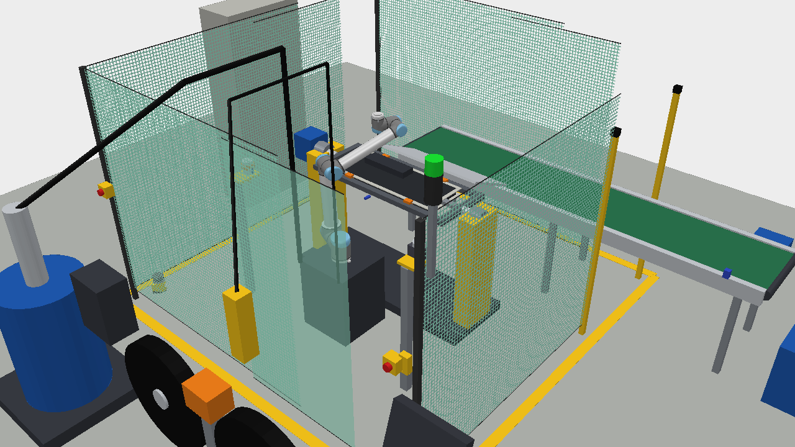
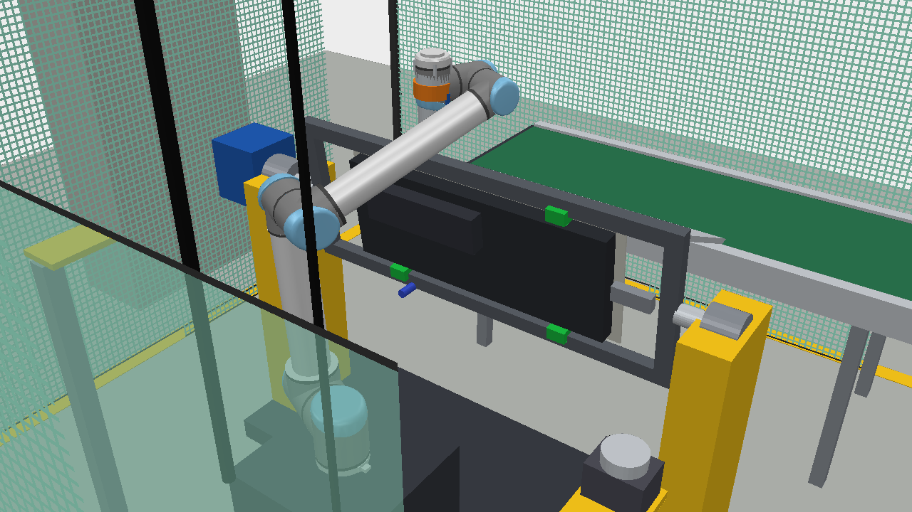
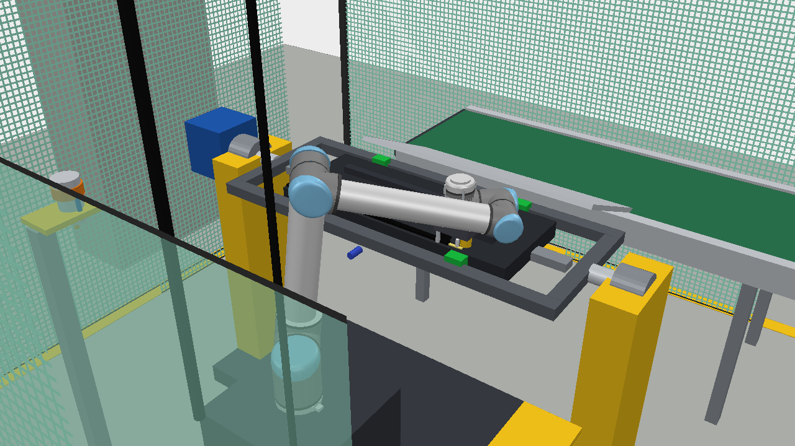

FIAP · CP05 · Case Extension Dash
Um robô faz a tupiagem e aplica cola + borracha nos dois lados da peça, com gabarito basculante
Gabriel Gino Jorge Dallape · RM 94862
Ronaldo Otsuka Ribeiro Mira · RM 95595
Mikael Pocker Fonseca · RM 95564
06/10/2026
Processo atual
AUTOMÁTICO
Injeta o painel em plástico
AUTOMÁTICO
Tira a peça com ventosas e solta na esteira
MANUAL · OP 1
Corta o excesso de injeção com estilete
MANUAL · OP 2
Passa o adesivo no canal de vedação
MANUAL · OP 3
Assenta a borracha no canal, à mão
A injetora e o cartesiano já são automáticos. O gargalo está depois da esteira: as três etapas de acabamento dependem de gente.
1 · Problemas e pontos críticos
Estilete o turno inteiro, perto de peça quente que acabou de sair da injetora
Movimento repetitivo e postura curvada sobre a esteira: risco de LER/DORT e afastamento
Contato com adesivo e solvente (vapores), exige EPI e controle constante
Rebarba mal tirada, cordão de cola irregular e borracha torta viram ruído e vazamento no carro
A injetora espera o operador mais lento; cansaço, pausas e troca de turno derrubam o ritmo
Não fica registro de quanta cola foi aplicada nem de onde a borracha ficou em cada peça
Por que robotizar
9 → 3
operadores na linha (3 turnos)
0
pessoas com estilete ou cola na mão
1 robô
faz as 3 tarefas, nos 2 lados da peça
2 · Rascunho do processo robotizado
Injetora + cartesiano
1
2
3
4
5
6
7
8
9
esteira →
fora da grade: abastecimento
1 Injetora + cartesiano (arquivo base): entregam a peça no gabarito
2 Gabarito basculante: grampos + servo, gira 180°
3 Robô 6 eixos em pedestal; tracejado = alcance de 1,3 m
4 Suporte de ferramentas: tupia e cabeçote de vedação
5 Calha → esteira de saída → contenedor
6 Grade NR-12 com porta intertravada
7 Cortina de luz na saída da esteira
8 Tambor de cola com bomba + rolo duplo de borracha
9 Painel elétrico (CLP), IHM e operador
2 · Sequência do ciclo
1 · JÁ EXISTE
Tira a peça da injetora e entrega direto no gabarito
2 · GABARITO
Grampos pneumáticos; servo gira 180° para expor o outro lado
3 · ROBÔ
Fresa flutuante tira a rebarba no contorno, dos dois lados
4 · ROBÔ
Troca de ferramenta; bico aplica cola e o rolete assenta o perfil, lado B e A
5 · SAÍDA
Gabarito inclina, a peça desce pela calha e a esteira leva
O cartesiano quase não muda: só entrega no gabarito. Quem vira a peça é o gabarito, não o robô. Ciclo simulado de cerca de 80 s, compatível com o ciclo de injeção de um painel.
2 · Qual tipo de robô e por quê
| Tipo | Ponto forte | Para esta peça |
|---|---|---|
| Cartesiano | Barato e preciso em linha reta | Não inclina a ferramenta para seguir a borda curva do painel |
| SCARA | Muito rápido em um plano | Só 4 eixos e alcance curto: não trabalha a borda 3D |
| Colaborativo | Dispensa parte da grade e é fácil de programar | Pouca rigidez para tupiar e velocidade limitada |
| 6 eixos industrial | Rígido, rápido, 6 graus de liberdade | Escolhido: segue o contorno nos dois lados e troca de ferramenta sozinho |
Classe escolhida: ~10–12 kg de carga e ~1,3 m de alcance (ex.: ABB IRB 1600, FANUC M-10iD). No CoppeliaSim usamos o UR10, que é o modelo de 6 eixos da biblioteca com tamanho equivalente.
2 · O robô e as ferramentas
| Escolha | O quê | Por quê |
|---|---|---|
| Robô | Articulado 6 eixos, ~10 kg, ~1,3 m de alcance, em pedestal (UR10 no simulador) | Tamanho de uma pessoa; segue o contorno 3D com a ferramenta sempre perpendicular à borda |
| Tupia | Spindle pneumático com flutuação radial + fresa | A flutuação compensa a variação da rebarba sem controle de força |
| Cabeçote de vedação | Válvula + bico de cola, rolete de pressão e faca pneumática | Cola e borracha no mesmo passe; o rolete vem 6 cm atrás do bico |
| Troca | Trocador automático no punho + suporte com duas posições | Um robô só faz as três tarefas; troca leva poucos segundos |
2 · Gabarito basculante
Quatro grampos pneumáticos seguram a peça pelas bordas, deixando as duas faces livres.
O lado B fica na mesma altura do lado A, então o robô usa o mesmo programa nas duas faces.
No fim, o quadro inclina, os grampos abrem e a peça desce pela calha até a esteira.
POR QUE ASSIM
O cartesiano continua fazendo só o que já faz: entregar a peça.
Sem gabarito, o robô teria que soltar e pegar a peça de novo para virar, o que gasta tempo e exige uma garra extra.
2 · Sensores, atuadores e recursos
2 · Respondendo ao enunciado
1 articulado de 6 eixos em pedestal
Ventosas do cartesiano + grampos pneumáticos do gabarito
Tupia flutuante e cabeçote de cola + borracha, com trocador
Peça no gabarito, grampos, encoder, cola, perfil, fim de esteira
Servo do gabarito, grampos, spindle, válvula, faca, motor
Bomba de tambor de cola + gerador de vácuo das ventosas
A existente; avisa o CLP quando a peça sai
Esteira de saída, calha, pedestal, suporte de ferramentas e de rolos
2 · Segurança · NR-12 e ISO 10218
Tela metálica de 2 m e portas com intertravamento
Na abertura por onde a esteira sai da célula
Reduz a velocidade quando alguém se aproxima do posto de abastecimento
Botoeiras em cada lado e na IHM, com relé de segurança
A entrada da peça é por cima, pelo cartesiano da injetora. O abastecimento de cola e de rolo de borracha fica fora da grade, então dá para reabastecer sem parar a célula.
3 · Custos do projeto
| Item | R$ |
|---|---|
| Robô 6 eixos com controlador (~US$ 45 mil) | 243.000 |
| Sistema de cola: bomba de tambor, válvula dosadora, controlador | 140.000 |
| Gabarito basculante: servo, redutor, quadro e grampos | 120.000 |
| Cabeçote de vedação + suporte de rolo duplo com emenda | 110.000 |
| Tupia flutuante, trocador de ferramenta, aspiração | 70.000 |
| Segurança: grade, porta, cortina de luz, scanner | 70.000 |
| Esteira de saída e calha | 40.000 |
| CLP, IHM e painel elétrico | 60.000 |
| Engenharia, programação, instalação e treinamento | 235.000 |
Câmbio assumido US$ 1 = R$ 5,40. Braço colaborativo de US$ 25–60 mil e sistema implantado de US$ 40–150 mil (EVS, 2026).
3 · Manual × robotizado e payback
| Custo por ano | Manual | Robô |
|---|---|---|
| Operadores | 486 mil | 162 mil |
| Manutenção | — | 54 mil |
| Refugo | 403 mil | 134 mil |
| Total | 889 mil | 350 mil |
Economia de R$ 539 mil por ano. Payback = 1.088 ÷ 539 ≈ 2,0 anos.
Premissas: 3 turnos, 3 op./turno hoje e 1 depois, R$ 4.500/mês por operador com encargos e benefícios (base salario.com.br), 28 mil peças/mês, refugo de 1,5% para 0,5%, R$ 80 por peça, manutenção de 5% do investimento ao ano.
−1.088
−549
−10
+529
+1.068
+1.607
Ano 0 · 1 · 2 · 3 · 4 · 5 — caixa acumulado em R$ mil
4 · A célula no CoppeliaSim

Vista geral: robô, gabarito, esteira, grade e utilidades

Gabarito girando 180°

Cola + borracha (lado B)
4 · Proposta no CoppeliaSim
Obrigado · perguntas?